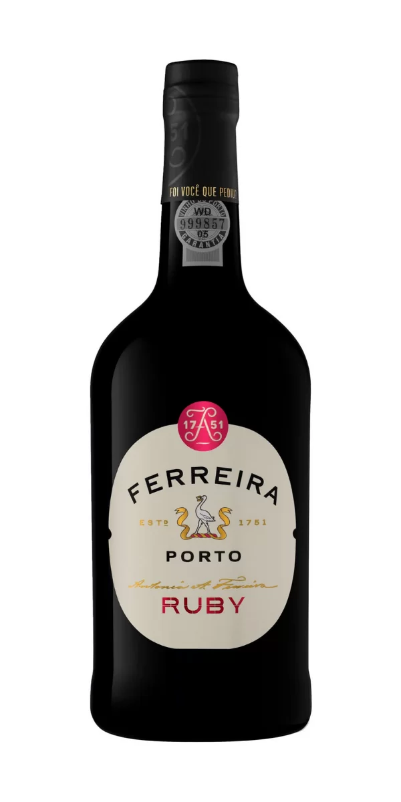

|  |
Portugal é um dos menores países da Europa, mas, mesmo em um pequeno território, é um dos mais importantes produtores de uvas e vinhos do mundo.
Os portugueses são conhecidos mundialmente pelos seus vinhos tradicionais e por cultivar mais de 250 tipos de uvas nativas, algo que traz muita personalidade aos rótulos lusitanos.
Além de abastecer o mercado interno, os vinhos portugueses são muito apreciados no mundo todo, inclusive aqui no Brasil.
Além das variações clássicas de vinhos tintos e brancos, Portugal é um país conhecido por produzir um dos vinhos mais famosos e autênticos do mundo, o Vinho do Porto.
|